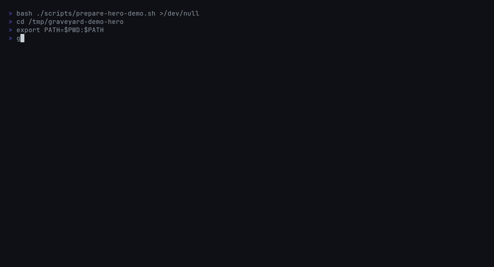

One pass across the repo
Manifest-aware walking covers Python, JavaScript, TypeScript, Go, and Rust without splitting work across multiple linters.
Mixed-language dead-code scanning
graveyard scans Python, JS/TS, Go, and Rust in one pass,
ranks findings with git-aware confidence, and gives teams a CI-safe
baseline diff instead of four disconnected tools and a cleanup freeze.
Demo
The demo shows the two commands that matter most for adoption: a ranked scan of the current repo state, then a baseline diff that isolates only newly introduced dead code for CI.

Why it exists
AI coding agents make stale code faster to create than to notice. Most
dead-code tooling still assumes one language at a time, which leaves
mixed-language repos juggling separate scanners, separate ignore rules,
and separate CI policies. graveyard is the single workflow
for teams that want one report they can trust.
Manifest-aware walking covers Python, JavaScript, TypeScript, Go, and Rust without splitting work across multiple linters.
Findings are scored with deadness age, reference count, scope, and recent churn so fresh work and public APIs do not drown out the queue.
Save a baseline once, then fail the build only when a pull request introduces new dead code instead of inheriting the whole backlog.
Use the table locally, JSON or CSV in automation, and SARIF when you want findings surfaced inside GitHub code scanning.
Comparison
The fastest way to make a new developer tool trustworthy is to be candid
about when something else is a better fit. graveyard is not
trying to replace every dead-code or dependency tool. It is the right
choice when the repository crosses language boundaries and the team wants
one dead-code workflow instead of several.
vultureWhen the problem is Python-only dead code, a focused single-language tool can be the cleanest answer.
knip
When the repo is centered on JavaScript or TypeScript dependency and
export cleanup, knip is a strong fit.
cargo-machete
When you need unused Rust dependency pruning, use the tool built for
that job. graveyard works at the source-code layer.
graveyardWhen the repo mixes Python, JS/TS, Go, and Rust and the team wants one scan, one ranking model, and one CI ratchet.
What it looks like
The install surface matters, but the proof is the workflow: scan once, save a baseline, then only fail the build when a pull request adds new dead code. The examples below show the parts teams actually wire into day-to-day review and CI.
$ graveyard scan --format table --min-confidence 0.80
0.94 ExportedUnused src/lib.rs:42 legacy::old_api
0.88 Dead services/foo.py:17 cleanup_task
Found 2 dead symbol(s)$ graveyard baseline diff --baseline .graveyard-baseline.json --ci
baseline findings: 18
new findings: 1
exit code: 1$ graveyard scan --format sarif --output graveyard.sarif
$ upload-sarif graveyard.sarif
3 findings surfaced in GitHub code scanningInstall
The command is always graveyard, even when the wrapper package
name changes across ecosystems. That keeps local usage, CI snippets, and
shell completions aligned.
pip install graveyard
pipx install graveyard
graveyard --versionnpm install -g graveyard-cli
graveyard --versioncargo install graveyard
graveyard --versionbrew tap Meru143/homebrew-tap
brew install graveyard
graveyard --versionCI adoption
This is the wedge that makes a scanner feel realistic in an existing codebase. You do not have to fix an old backlog in one merge. Save a baseline once, then let pull requests earn trust by keeping the number from growing.
graveyard baseline save --output .graveyard-baseline.json
graveyard baseline diff --baseline .graveyard-baseline.json --cigraveyard scan --format sarif --output graveyard.sarif
graveyard scan --ci --min-confidence 0.80